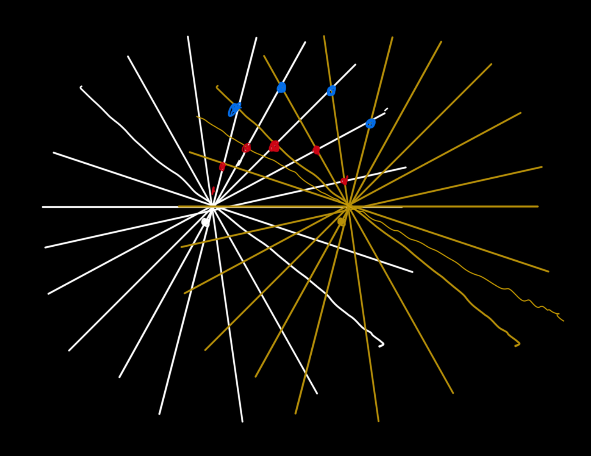
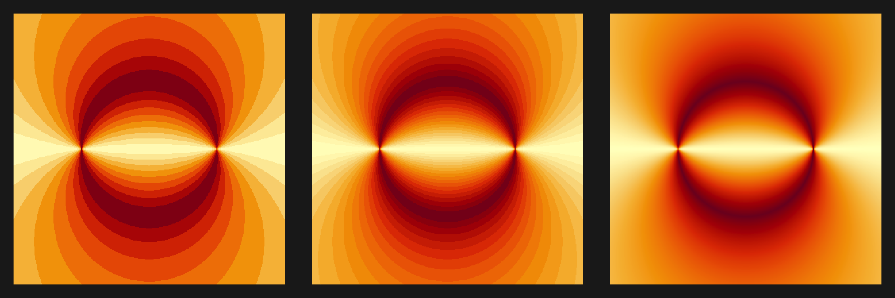
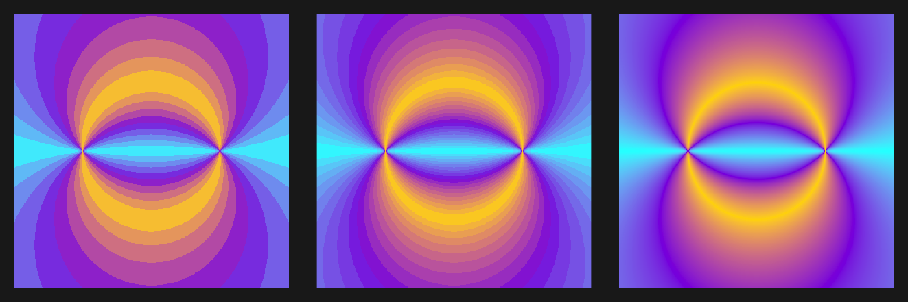
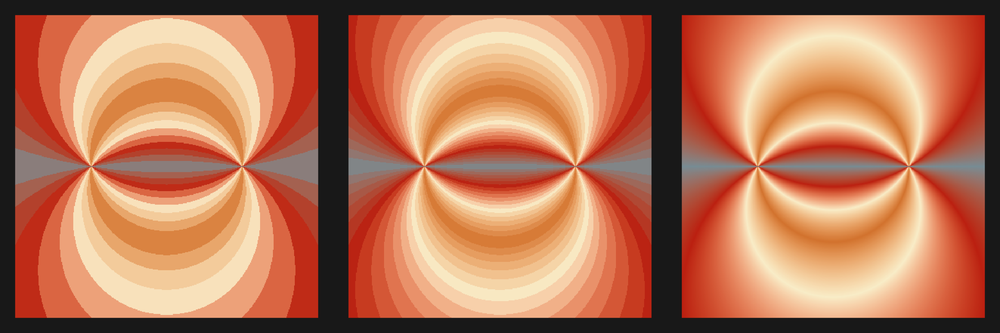
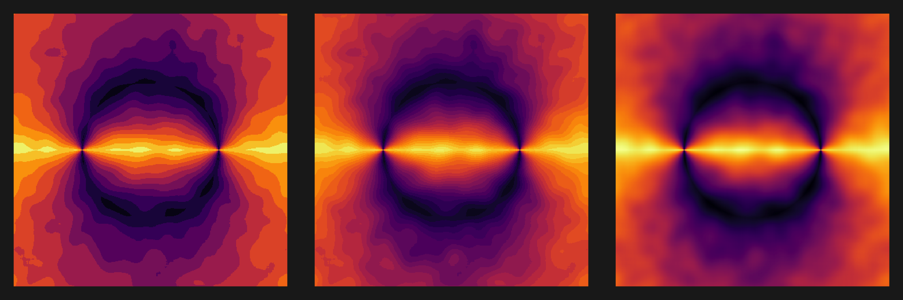
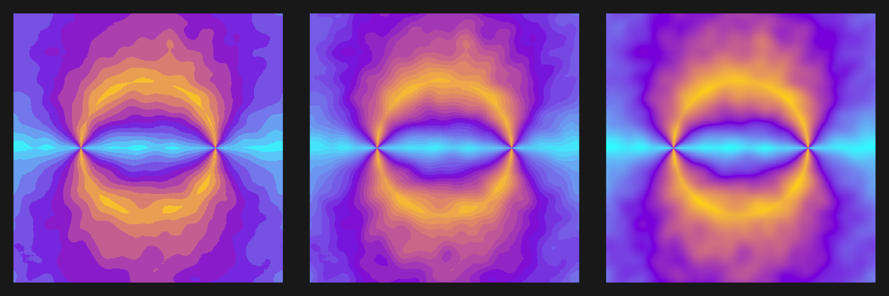
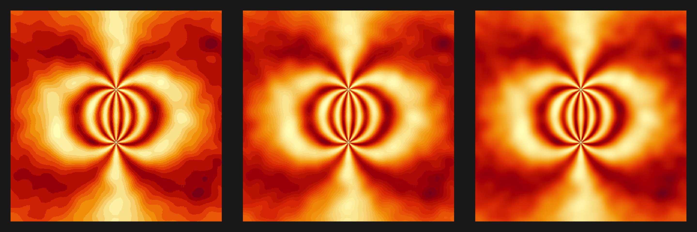
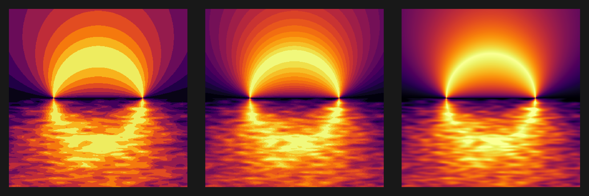

![]()
library(ggplot2)
library(purrr)
library(patchwork)
library(ambient)
library(wesanderson)
library(httpgd)
library(ggdark)
library(viridis)
library(fields)
set.seed(12345)
theme_set(
dark_theme_void() +
theme(plot.background = element_rect(fill = "#1F1F1F", color = "#1F1F1F"))
)Imagine a universe where light behaves differently than ours. Rather than diffusing its intensity with distance, and simply increasing it with multiple sources, light in this universe is different. When two light beams meet, their combined intensity depends on the angle between them. Right angles are the best - when two light beams meet at a point perpendicularly, they have the highest possible intensity at that point. As the angle becomes smaller or bigger than 90 degrees (pi/2 radians), the intensity becomes weaker.
Why would you imagine such a thing? I don’t know why I wonder about such things, but I often do. As an example, I drew the image below while thinking about this - we have two “suns”, the red dots are 90 degree intersections, the blue points are intersections with a smaller angle.

Drawing can only get me so far, but this is an easy enough simulation to do in R, and the results are pretty, especially when we change some of those initial assumptions. I’ve long been a fan of Danielle Navarro’s approach to generative art, and it has been years since I dipped my toes in these waters, so here goes nothing. This post will be light on details, but hopefully it makes sense. Let’s explore how this imaginary physics creates some beautiful patterns.
What things do we need for the simplest possible simulation?
- two fixed points A and B for our light sources
- a way to calculate the angle formed at any other point X where beams from A and B intersect - a way to convert this angle into an intensity value
- calculate the intensity for many different points in the plane
- visualize the result
Here are some basic functions to do this:
#' Calculates the angle formed by AX and BX
#'
#' @param X a numeric vector of length 2 or a matrix with two columns in which each row represents the x and y coordinates of a point
#' @param A A numeric vector of length 2 representing the first source
#' @param B A numeric vector of length 2 representing the second source
#' @return The angle in radians between vectors A and B with respect to point(s) X.
angle <- function(X, A, B) {
X <- as.matrix(X)
if (length(X) == 2) X <- t(X)
A <- rep(A, each = length(X)/2)
B <- rep(B, each = length(X)/2)
v1 <- X - A
v2 <- X - B
dot_product <- rowSums(v1 * v2)
norm <- sqrt(rowSums(v1 * v1)) * sqrt(rowSums(v2 * v2))
cos_theta <- dot_product / norm
acos(cos_theta)
}
#' Convert angle to intensity
#'
#' @param theta A numeric value representing the angle in radians.
#' @return A numeric value representing the intensity.
angle_to_intensity <- function(theta) {
1 - abs(theta - pi / 2) / (pi / 2)
}
#' Calculate intensity at a point
#'
#' @param x a numeric vector of length 2 or a matrix with two columns in which each row represents the x and y coordinates of a point
#' @param source1 A numeric vector of length 2 representing the first source
#' @param source2 A numeric vector of length 2 representing the second source
#' @param angle_transform_fun A function that takes an angle in radians and returns
#' a value to be plotted as the coordinate intensity. Default is a linear function of
#' the absolute deviation from a right angle.
#' @return A numeric value in [0, 1] representing the intensity at point x.
intensity <- function(x, source1, source2, angle_transform_fun = angle_to_intensity) {
theta <- angle(x, source1, source2)
angle_transform_fun(theta)
}With these functions in hand we can play around. We need two sources:
A <- c(-1, 0)
B <- c(1, 0)Just as an illustration, the maximum intensity should be at point (0, 1) which forms a right angle. The minimum intensity should be at any point on the AB line, e.g. (0, 0) as it forms a 180 degree angle:
intensity(c(0, 1), A, B)[1] 1intensity(c(0, 0), A, B)[1] 0Now we need a grid of points where their beams will intersect:
grid <- expand.grid(
x = seq(-2, 2, 0.01),
y = seq(-2, 2, 0.01)
)and evaluate their intensity:
grid$intensity1 <- intensity(grid[c("x", "y")], A, B)
main_plot <- grid |>
ggplot(aes(x, y, fill = intensity1, color = intensity1)) +
geom_raster()
main_plot + scale_fill_gradientn(colors = viridis::inferno(256))
That’s kinda cool. Mostly what I expected, but it’s pretty. We can try a few more color schemes and plot settings. To make things a bit easier, I want to simultaneously plot multiple versions with different binning granularities:
plot3s <- function(main, pallette) {
p1 <- main +
scale_fill_stepsn(colors = pallette, n.breaks = 12) +
theme(legend.position = "none")
p2 <- main +
scale_fill_stepsn(colors = pallette, n.breaks = 24) +
theme(legend.position = "none")
p3 <- main +
scale_fill_gradientn(colors = pallette) +
theme(legend.position = "none")
p1 + p2 + p3
}For example with out original palette we get:
plot3s(main_plot, viridis::inferno(256))
With the binned version on the left, I notice something that wasn’t as obvious in the smooth one: there is more than one circle! In fact, all points that form the same angle with A and B lie on a circle. This wasn’t immediately obvious to me, but I eventually remembered the inscribed angle theorem from high school geometry. This theorem is a more general case of the well-known Thales’ theorem, which states that all points on a circle form 90-degree angles with any diameter line of the circle. The resulting figure also represents one half of what is known as the Apollonian circles. This realization led me down a Wikipedia rabbit hole, where I read more about alternative coordinate systems like the bipolar coordinate system. At first glance, it seems esoteric and pointless, but it turns out it can simplify many problems that are otherwise too complicated to compute in standard Cartesian coordinate systems.
Anyway, let’s go on with making pretty variations on this theme.
plot3s(main_plot, hcl.colors(12, "YlOrRd", rev = TRUE))
plot3s(main_plot, c("#00FFFF", "#8A2BE2", "#FFD700"))
plot3s(main_plot, wes_palette("Royal1"))


Alright, how about we add some correlated noise for variety?
gaussian_kernel <- function(sigma_x, sigma_y = sigma_x) {
size_x <- ceiling(2 * sigma_x) + 1
size_y <- ceiling(2 * sigma_y) + 1
kernel <- outer(-size_x:size_x, -size_y:size_y, function(x, y) {
exp(-(x^2 / (2 * sigma_x^2) + y^2 / (2 * sigma_y^2)))
})
kernel / sum(kernel)
}
convolve2d <- function(mat, kernel) {
fft_mat <- fft(mat)
fft_kernel <- fft(kernel, dim(mat))
Re(fft(fft_mat * fft_kernel, inverse = TRUE) / length(mat))
}
smooth_matrix <- function(mat, kernel = gaussian_kernel(1)) {
pad_kernel <- matrix(0, nrow = nrow(mat), ncol = ncol(mat))
pad_kernel[1:nrow(kernel), 1:ncol(kernel)] <- kernel
convolve2d(mat, pad_kernel)
}
grid_size <- sqrt(nrow(grid))
noise <- matrix(rnorm(grid_size^2), grid_size)
noise <- smooth_matrix(noise, kernel = gaussian_kernel(10))Now won’t you look at that!
grid$intensity2 <- grid$intensity1 + as.vector(t(noise))
noise_plot <- grid |>
ggplot(aes(x, y, fill = intensity2, color = intensity2)) +
geom_raster() +
theme(legend.position = "none")
plot3s(noise_plot, rev(viridis::inferno(256)))
plot3s(noise_plot, hcl.colors(12, "YlOrRd", rev = TRUE))
plot3s(noise_plot, c("#00FFFF", "#8A2BE2", "#FFD700"))
plot3s(noise_plot, wes_palette("Royal1"))



Alright, one last one. Instead of clamping the intensity to be a linear function of how much the angle deviates from 90 degrees, let’s introduce some oscillations. We’ll also use a larger range of x and y coordinates.
nonlinear_intensity <- function(theta) {
deviation <- abs(theta - pi/2) / (pi/2)
sin(2 * pi * deviation)^2
}
bigger_grid <- expand.grid(
x = seq(-4, 4, 0.02),
y = seq(-4, 4, 0.02)
)
bigger_grid_size <- sqrt(nrow(bigger_grid))
bigger_noise <- matrix(rnorm(bigger_grid_size^2, sd = 2), bigger_grid_size)
bigger_noise <- smooth_matrix(bigger_noise, kernel = gaussian_kernel(10))
bigger_grid$intensity3 <- intensity(bigger_grid[c(1,2)], A, B, nonlinear_intensity) +
as.vector(t(bigger_noise))
noise_plot_nl <- bigger_grid |>
ggplot(aes(y, x, fill = intensity3, color = intensity3)) +
geom_raster() +
theme(legend.position = "none")
plot3s(noise_plot_nl, viridis::inferno(256))
plot3s(noise_plot_nl, hcl.colors(12, "YlOrRd", rev = TRUE))
plot3s(noise_plot_nl, c("#00FFFF", "#8A2BE2", "#FFD700"))
plot3s(noise_plot_nl, grey.colors(2))



Last one, for real this time:
# Generate and smooth directional noise
grid_size <- sqrt(nrow(grid))
noise_matrix <- matrix(rnorm(grid_size^2), nrow = grid_size)
smoothed_noise <- smooth_matrix(noise_matrix, kernel = gaussian_kernel(sigma_x = 10, sigma_y = 2))
# Apply noise only on the bottom part of the image and clip intensity between 0 and 1
is_lower_half <- grid$y < 0
grid$intensity4 <- ifelse(
is_lower_half,
grid$intensity1^0.75 + as.vector(smoothed_noise),
grid$intensity1
)
# somewhat random aesthetic choices
inside_upper_circle <- (grid$y^2 + grid$x^2 <= 1) & !is_lower_half
grid$intensity4 <- pmax(pmin(grid$intensity4, 1), 0)
grid$intensity4[inside_upper_circle] <- grid$intensity4[inside_upper_circle]^0.4
streak_noise_plot <- grid |>
ggplot(aes(x, y, fill = intensity4, color = intensity4)) +
geom_raster() +
theme(legend.position = "none")
plot3s(streak_noise_plot, viridis::inferno(256))
Reuse
Citation
BibTeX citation:
@online{popov2025,
author = {Popov, Vencislav},
title = {aRt-o {Pollo}},
date = {2025-02-21},
url = {https://venpopov.com/posts/2025/arto-pollo/},
langid = {en}
}
For attribution, please cite this work as:
Popov, Vencislav. 2025. “aRt-o Pollo.” February 21, 2025.
https://venpopov.com/posts/2025/arto-pollo/.